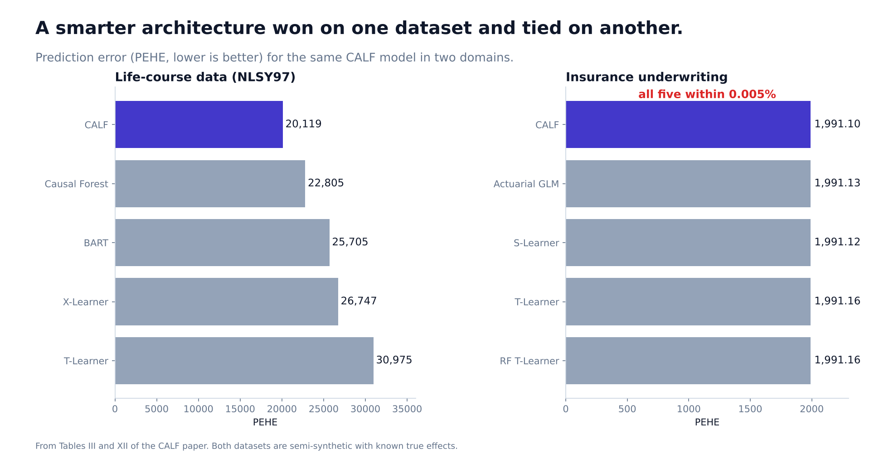
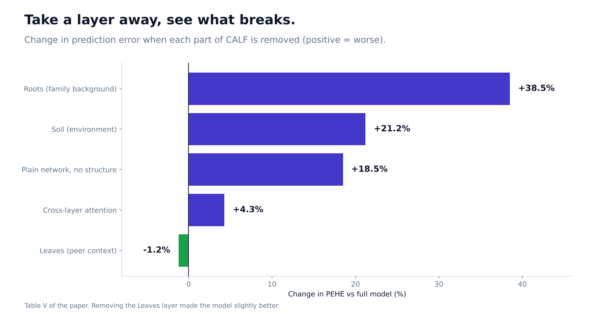

I Built an AI That Beat the Best Baseline. Then I Pointed It at Insurance and It Did Nothing.
Why a smarter architecture only helps when your data has the structure it expects.

Suppose a university wants to know what college would do for one specific student. Not the average student, but this one. That is called an individual treatment effect, and it can never be observed directly, because you cannot send the same person to college and not to college.
Most machine-learning tools for this problem toss every piece of information about a person into one big list. But the facts in that list are not equal. Family background comes before school, school before friends, and friends before the choices a person makes. I wanted a model that knew that.
The idea: a tree with four layers
CALF (Causally-Aware Layered Fabric) sorts a person's data into four groups and passes information down through them in order:
- Roots: fixed background, such as family income and parental education.
- Soil: environment, such as school quality.
- Leaves: social context, such as peers.
- Choice: the person's own decisions.
Each layer can look back at the one above it through attention, the same mechanism behind modern language models. I also proved that, under standard assumptions, the individual effect can be recovered from this structure.
Where it worked
Real individual effects are never known, so researchers test on semi-synthetic data: real-looking people with a simulated outcome, so the true answer is known. I used 8,984 people modeled on a long-running US youth survey, with college attendance as the treatment and later income as the outcome.
On the standard error measure (PEHE, lower is better), CALF scored 20,119 against 22,805 for Causal Forest, the strongest baseline. That is about 12% better, and the difference was statistically significant. It beat T-Learner, X-Learner and BART too. DragonNet collapsed completely and predicted almost no effect at all.
I also took the model apart. Removing the Roots layer made it 38.5% worse. Replacing the whole structure with a plain neural network made it 18.5% worse. So the layered design was doing real work.

Where it did not
The honest results are the more interesting ones.
- The Leaves layer was dead weight. Removing peer context made the model slightly better (19,885 vs 20,119).
- Averages got worse as individuals got better. CALF's overall effect estimate was off by 4.4%, versus 2.2% for Causal Forest.
- It needs lots of data. With 10% of the training set, CALF's error was 60,233 against Causal Forest's 27,979. It only overtakes Causal Forest at about 70% of the data.
- Its uncertainty was overconfident. Intervals meant to cover 90% of the truth covered only 66.9%.
- On standard benchmarks it did not win. On IHDP, a popular test set, Causal Forest scored 0.44 and CALF 1.03.
The experiment that taught me the most
I took CALF, changed nothing, and used it to decide whether to accept or decline motor-insurance policies, wrapped in an eight-stage pipeline that produces five audit documents per policy and passes all 15 of its governance checks.
The prediction error was 1,991.099 for CALF and between 1,991.116 and 1,991.165 for the other four methods, including a plain actuarial formula that insurers have used for decades. The difference was about 0.001%. Effectively zero.
It is tempting to hide a result like that. But it explained the whole project. CALF's advantage came from layered structure that exists in life-course data, where family shapes school and school shapes choices. My insurance data, which I generated from a simulator, did not have that structure: the claim amounts were dominated by large random draws that had little to do with the risk factors. A clever architecture cannot find structure that is not there.
Two caveats I will not hide: both datasets are semi-synthetic, so these results say how well the model recovers a simulated world, and the insurance null may partly reflect how I built the simulator.
What I would tell you
- Before you adopt a fancier model, ask whether your data has the structure the model assumes.
- A well-governed pipeline around a weak signal is still a weak signal. Passing 15 of 15 audit checks does not make a prediction correct.
- Report where the model fails, including the small-data regime. A buyer deciding whether to use your tool needs it more than the headline number.
Code: github.com/Davuri124/CALF